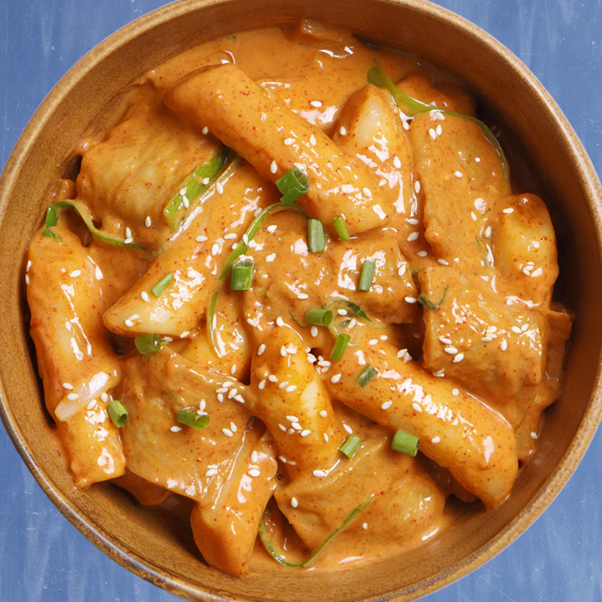

Rose Tteokbokki

Description
If you ever want to indulge in some trendy and delicious Korean food, then Rose Tteokbokki should definitely be on your list. This fusion dish has taken the country by storm, with its creamy and mildly spicy flavor profile that everyone seems to be obsessed with. Learn how to make this dish at home! It’s so easy and quick!
Ingredients
These are the ingredients for a delicious rose tteokbokki
- 1.5 Tbsp gochujang (Korean chili paste)
- 1.5 Tbsp raw sugar
- 1.5 Tbsp regular soy sauce
- 1 to 2 Tbsp gochugaru (Korean chili powder or chili flakes)
- 300 ml (slightly under 1 and 1/4 cup) of heavy cream
- 100ml (about 1/3 cup + 1 Tbsp + 1 tsp) whole milk, full cream
- 1 Tbsp cooking oil
- 50g / 1.7 ounces onion, thinly sliced
- 30g / 1 ounce cabbage, thinly sliced
- 15g / 0.5 ounces green onion, thinly sliced
- 320g / 11 ounces Korean rice cake (garaetteok)
- 100g / 3.5 ounces (2 sheets) Korean fish cake, cut into bite-sized pieces
- 90g / 3.1 ounces cocktail sausage (e.g. kabana minis), lightly scored
- 1/2 cup mozzarella cheese, grated
- 1 Tbsp parmesan cheese, grated
Steps to make a Delicious Rose Tteokbokki
Here's the step by step recipe:
- Combine gochujang, sugar, soy sauce, and gochugaru in a small bowl. Mix them well and set it aside.
- In a heated pan, add the cooking oil, then onion, cabbage, and green onion. Stir fry them until lightly wilted, about 3 minutes. Reduce the heat to medium low.
- Add the gochujang sauce mixture from Step 1, and stir well.
- Add the heavy cream and milk and stir until fully combined with the gochujang sauce for a smooth, creamy consistency.
- Add the rice cakes, fish cakes, and sausage to your pan. Then increase the heat to medium high so the sauce starts to boil. Stir often until the rice cakes have softened, being careful not to overcook them, as overcooked rice cakes can become mushy.
- Once the sauce is reduced and the other ingredients are evenly coated with it, sprinkle the cheese around the dish evenly. Give it a few moments to melt and produce a cheesy, creamy texture, then serve.